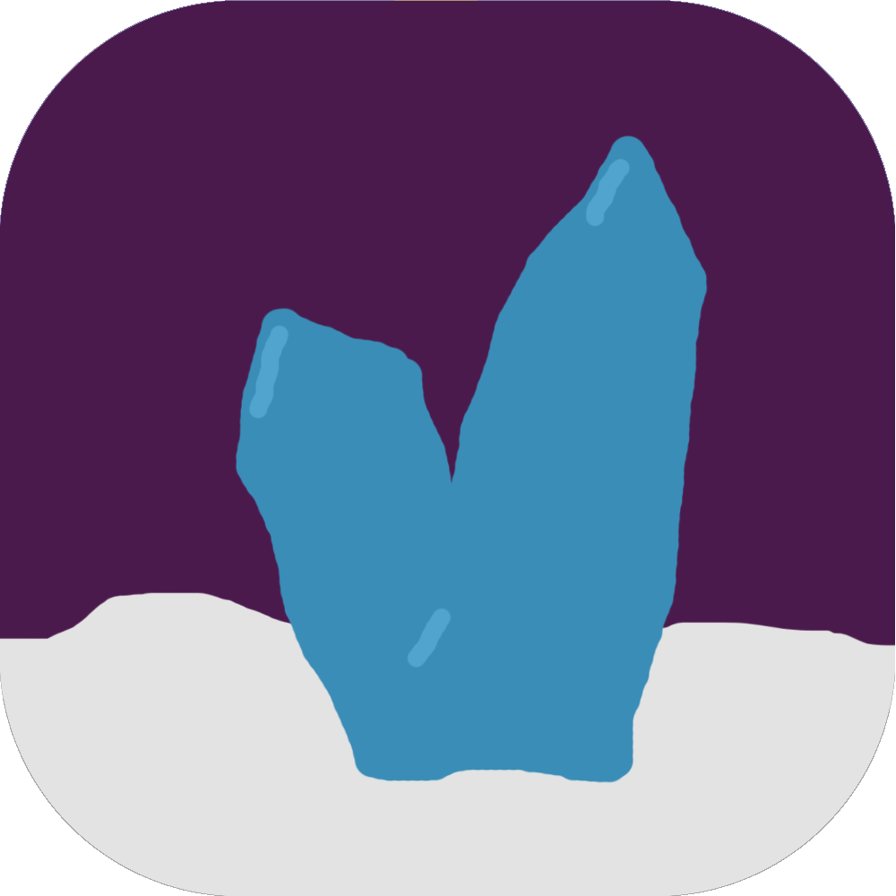
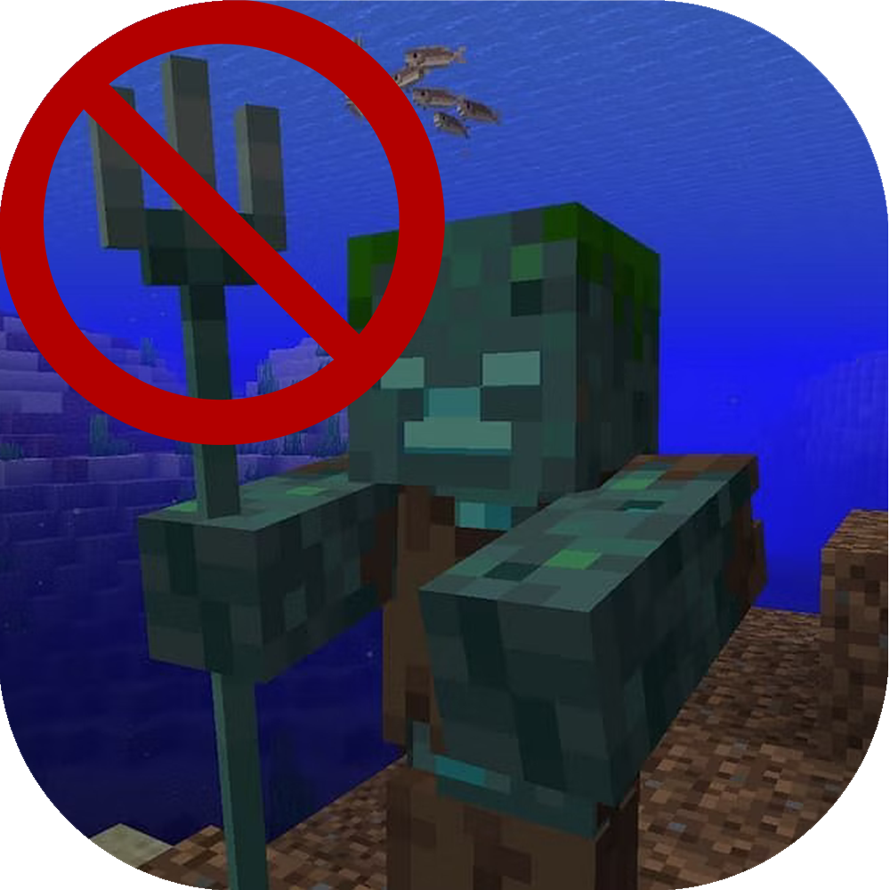
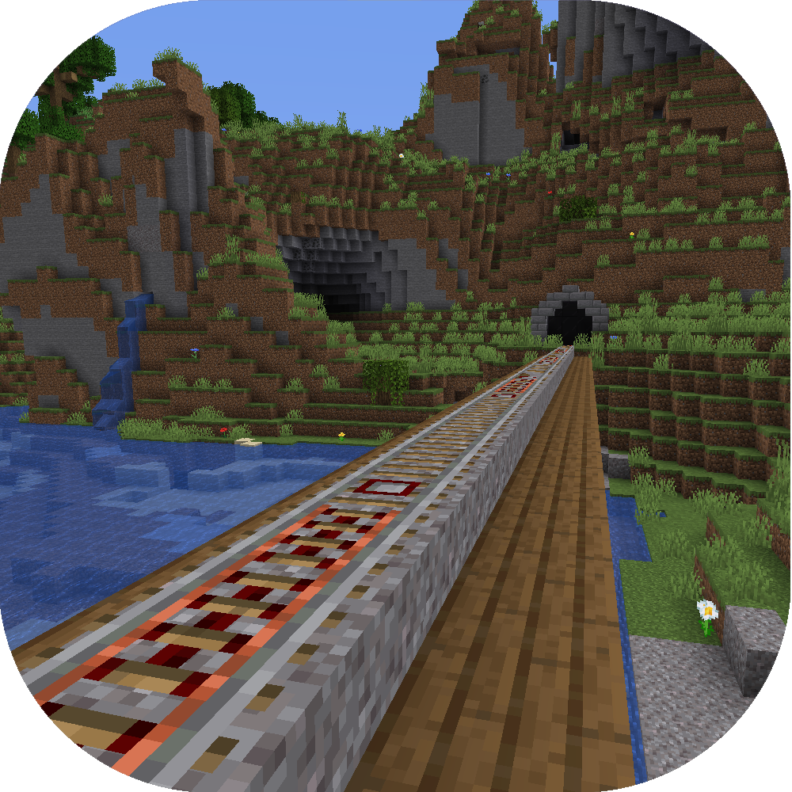
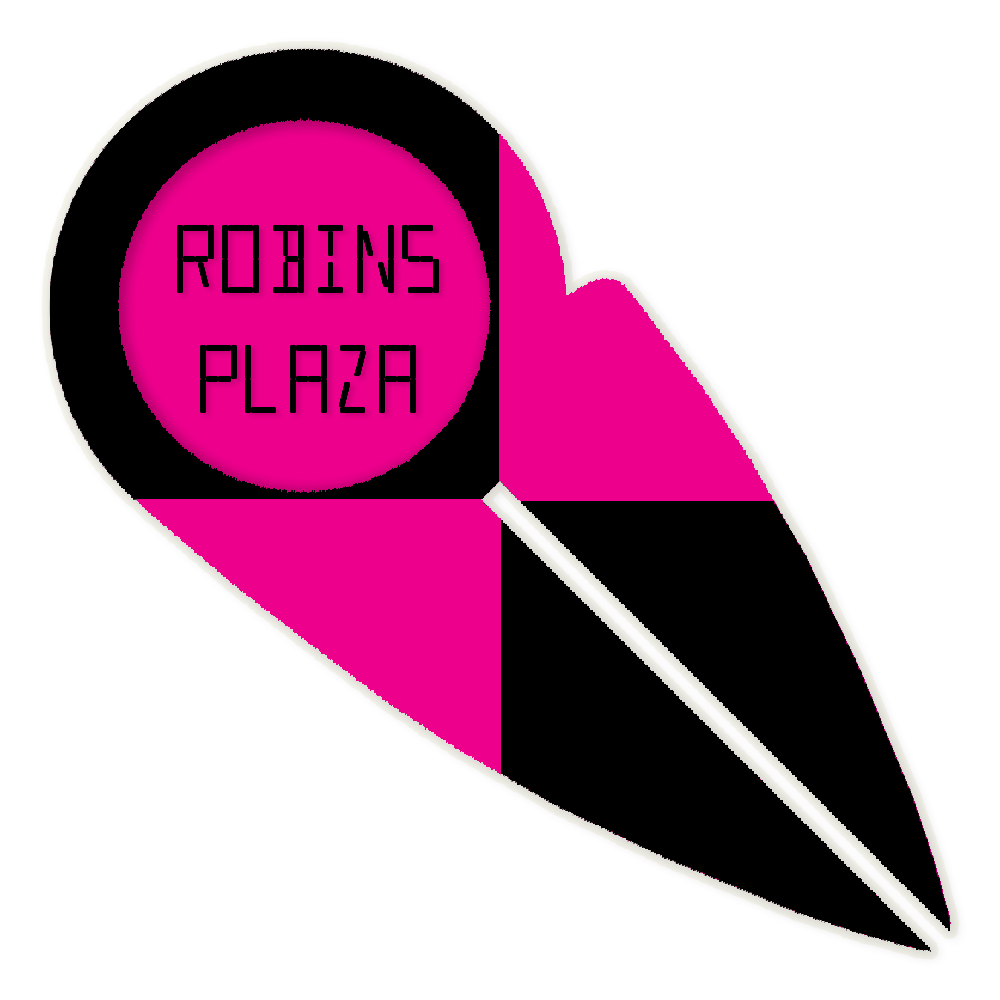

Minecraft Java Mods
Mods
MilkNMeth (Forge 1.18.2)
A collection of twitch chat's ideas all in one mod. Beware of ants

Datapacks
Drowned Fixer
Replaces drowned's tridents with iron swords, and adds a crafting recipe for tridents

Copper Rails
Changes the powered rail recipe to use copper instead of gold to give copper an actual use
(put in both datapack and resource pack folders)

